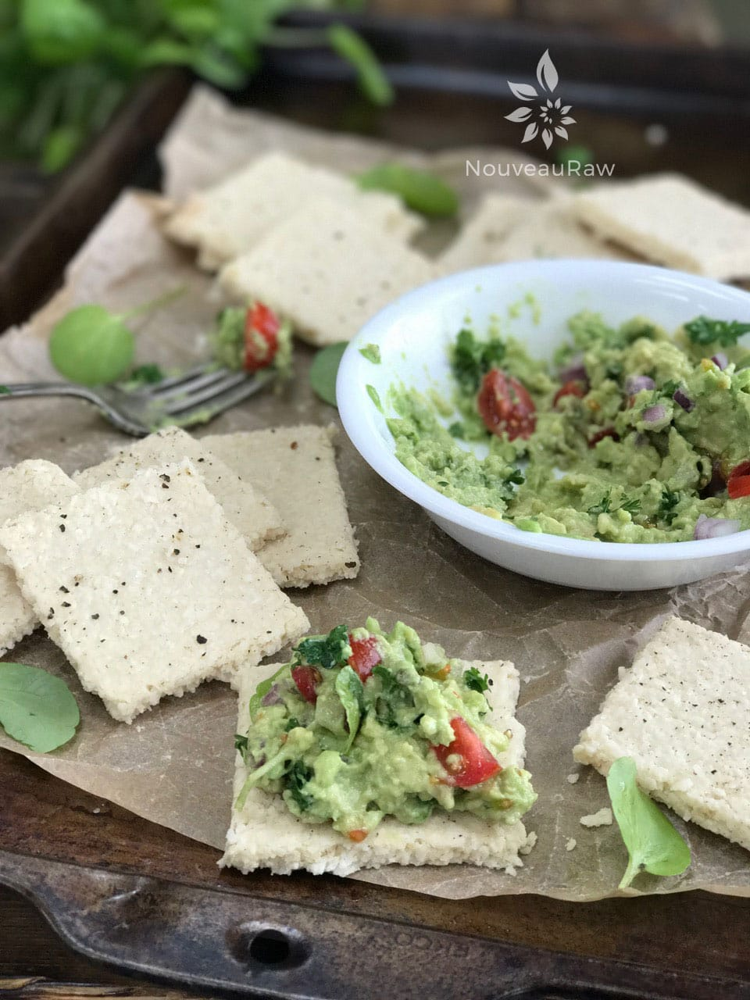

Olive Oil and Cracked Black Pepper Cheese Crackers

~ raw, vegan, gluten-free, cultured ~
I love it when a cracker can cause me to fall back into my chair, and my eyes involuntarily roll back in blissful contentment. This cracker is what I call…
A Vehicle of Consciousness
A lot of consciousness comes into play when creating a recipe: nutrition, beauty, texture, and flavor. So, let’s see just what these crackers have in store for us.
Thanks to cashews, they are compiled of healthy fats, which are essential for our body to absorb the fat-soluble vitamins: A, D, E, and K. Then we have B vitamins, ushered in through the use of nutritional yeast. How about some iodine for thyroid health? Bring on the Irish moss! And throw in some gut-loving probiotics, as well as other minerals and goodness. Not too shabby!
Did you know that when you see and smell food or even start thinking about eating, the brain readies the digestive tract for nourishment? This anticipation stimulates the secretion of saliva in the mouth and gastric juices in the stomach.
With that being said, I also was very pleased with the pure ivory color of this cracker. This isn’t something that you see every day. It makes for a wonderful foundation that will cause any topping to pop with color.
With my eyes primed, my next step is to fire up the olfactory sensory neurons, aka the nose. I start by closing my eyes (this shuts off other sensory distractions) and inhale deeply. Smelling your food before eating it will radically change how you experience flavor. I know it is tempting to just dive in, but practice a little restraint, take a pause and sniff a few inches above the cracker (or any other food)…oh my. Here’s a little tip to heighten the experience: open your mouth slightly as you inhale through the nose to engage the retronasal pathway. This causes you to also smell from the back of the nose.

Before you take a bite, take a quiet moment to give thanks. Receiving food with gratitude and an open heart will make a difference on every level.
Now it’s time to take a bite. We are going to apply the Goldilocks and the Three Bears rule here. Don’t take one that is too small so you can’t detect all of the flavors… don’t take one that is so large that you spend the whole time wondering if you will ever be able to swallow… take the perfect-sized bite that is still substantial enough to explore.
Chew slooowly and thoroughly. Taste buds are not only on your tongue; you will also find taste receptors in your cheeks and on the roof of your mouth. So with your tongue, move the food around, coating the inside of your mouth.
Once it is thoroughly broken down, swallow. Stay steady and identify the flavors and sensations. What flavors stand out? What flavors linger? How was the texture upon the first bite, as you were chewing, and while you were swallowing? Does it leave you hungering for more? (That is always my goal when creating recipes.)
All this leads me to this cracker and my whole experience. Upon smelling the cracker, I picked up aromas of cheese, butter (?), and garlic. Oh baby, already I could sense my digestion perking up. As my teeth sank into the cracker, I noticed that it was crunchy but had a light flakiness as well. I observed that as I continued to chew, the texture felt a little chewy, but in a good way… like it had a nice substance to it. I soon found my mouth coated in a wonderful explosion of flavors… cheesiness, butteriness, onion, garlic, salt, and even a little and I mean little, hint of sweetness. I swallowed, my world went quiet… I think I experienced a foodgasm. Did I want more? Ohhh yes, yes, and yes! Well, this is a good place to stop. You need to make this cracker, and I need to step outside and get some fresh air. Much love and apron string blessings. amie sue
Yields 24 crackers
Cultured Cheese: Yield 2 1/2 cups
- 1 1/2 cups (112 g) cashews, soak 2+ hours
- 3/4 cup (165 g) water
- 1 probiotic capsule (emptied)
- 3 Tbsp (60 g) Irish moss gel (optional)
- 1/4 cup 17 g) nutritional yeast
- 2 Tbsp (20 g) raw Apple cider vinegar
- 1 Tbsp (10 g) onion powder
- 1 tsp (6 g) Himalayan pink salt
- 1/2 tsp (2 g) garlic powder
- 2 Tbsp (20 g) olive oil
- Black pepper to taste
For cracker making:
- 3/4 cup (236 g) cultured cheese (from above)
- 2 1/2 cups (248 g) shredded dried coconut, unsweetened.
Preparation:
Cheese:
- **Important note: this cheese recipe makes more cheese than you will need for the crackers. So you can either triple the dried coconut used to make a large batch of crackers, or you can set aside the extra cheese and use it for other meals (veggie dip, dressing, spread on a wrap, etc).**
- First and foremost, make sure all of the utensils and pieces of equipment you use for culturing are sterilized, to avoid growing bad bacteria.
- If at any time you see mold–fuzzy, black, or pink–it will need to be tossed.
- After the cashews have soaked for 2+ hours, drain and discard the soak water.
- In a high-powered blender, combine the cashews and water.
- Blend until the batter is creamy smooth. You shouldn’t detect any grit. If you do, keep blending.
- This process can take 2-4 minutes, depending on the power of the blender. Keep your hand cupped around the base of the blender carafe to feel for warmth. If the batter is getting too warm, stop the machine and let it cool. Then proceed once cooled.
- Once you have a smooth texture, empty the contents of the probiotic capsule in the blender and blend until the powder is mixed in.
- Pour into a glass bowl, cover with a cloth, and let it sit overnight to culture.
- Place the cheese in a warm location to ferment for 8-72 hours. Temperatures that are too cold inhibit incubation.
- Keep in mind there is no hard and fast rule about how long it needs to culture. Your taste buds will have to guide you in determining the right length of time.
- The warmer the house, the faster it will ferment.
- Start taste testing around the 6-hour mark. I did mine for 24 hours with a house temp of 70 degrees.
- To speed up the process, place in the dehydrator set at 115 degrees (F) until it reaches the right level of tang for you.
- Once it has cultured, add the remaining ingredients into the blender, except for the olive oil. Once everything is well mixed, with the machine running, drizzle in the oil until well incorporated. Chill to thicken.
Assembly of the cracker:
- In the food processor, fitted with the “S” blade, combine the shredded coconut and measured-out cheese, processing till well mixed.
- If you have only large coconut flakes, place them in the food processor first and process them first to break down to small crumbles.
- Line the dehydrator tray with a non-stick teflex sheet.
- Spread the batter 1/4″ thick and sprinkle freshly cracked black pepper on top.
- Make sure that you spread it evenly so it dries evenly.
- Clean up the edges and score the crackers into desired shapes and sizes. You can use a pizza cutter or a long metal ruler to create the score marks. I use a pastry cutter, which can be found (here).
- Dehydrate at 145 degrees (F) for 1 hour, then reduce to 115 degrees (F) and continue drying for up to 24 hours… until dry and crispy.
- Snap apart and let cool before storing in an airtight bag/container.
- They should last several weeks in the pantry and can be frozen for 1-2 months. If they start to soften due to humidity, throw them back in the dehydrator to crisp up.
Culinary Explanations:
- Why do I start the dehydrator at 145 degrees (F)? Click (here) to learn the reason behind this.
- When working with fresh ingredients, it is important to taste test as you build a recipe. Learn why (here).
- Don’t own a dehydrator? Learn how to use your oven (here). I do however truly believe that a dehydrator is a worthwhile investment. Click (here) to learn what I use.
© AmieSue.com